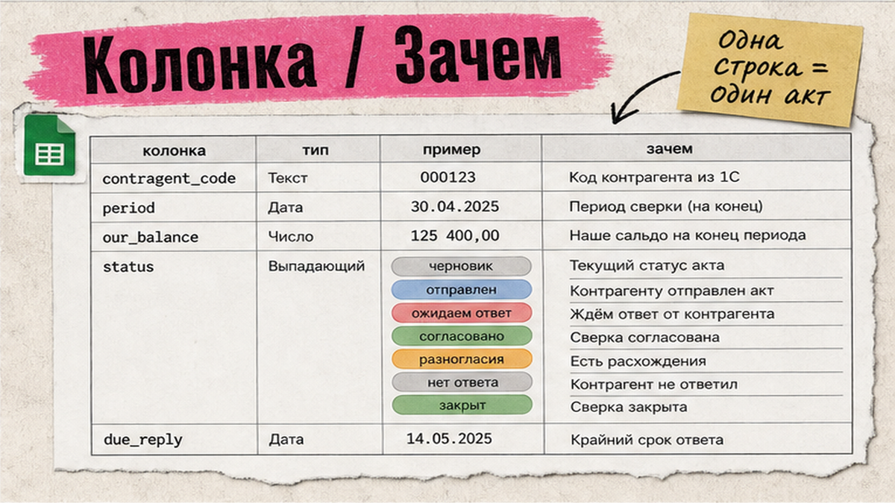
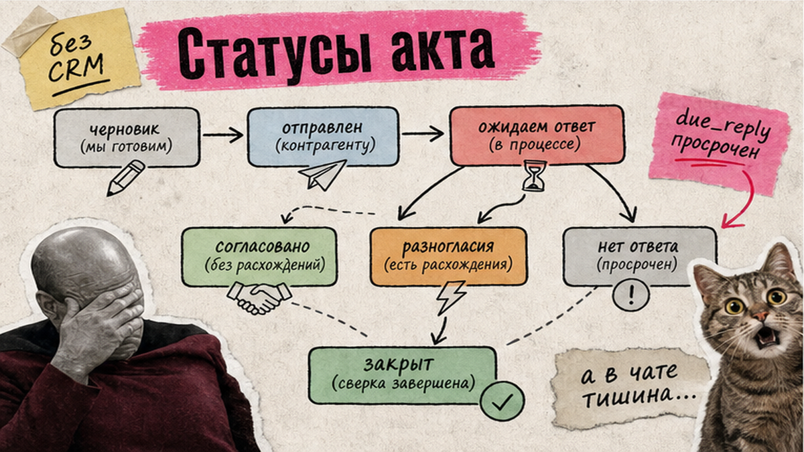
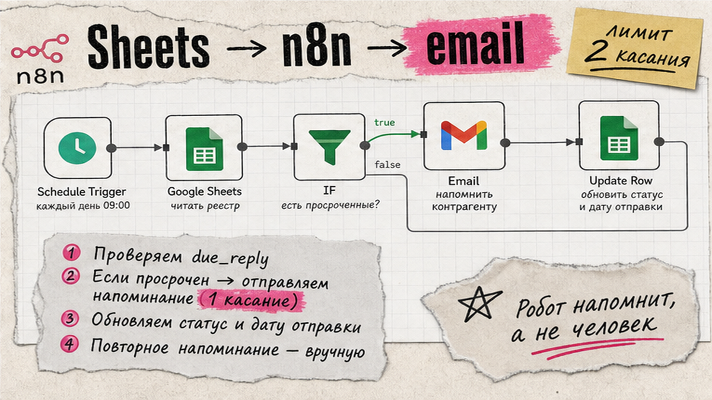

Акты сверки уходят в почту и ЭДО, а ответы теряются в чатах: кто подписал, кто молчит, где спор. Контроль актов сверки без CRM начинается с одного реестра в таблице: период, контрагент, статус, срок ответа. Ниже – рабочий контур: колонки, статусы draft→closed, напоминания Google Sheets → n8n → email и связка с дебиторкой, чтобы еженедельно видеть, что тормозит закрытие месяца.
Я веду это как финансист малого финотдела, а не как внедрение SaaS. Закон коммерцию не обязывает составлять акт сверки – его можно закрепить в договоре. Акт не заменяет накладные и УПД: это признание сальдо, не первичка по 402-ФЗ. Форма 0510477 с 2026 года – про госсектор; нам нужен монитор ответов в таблице.

Реестр актов сверки – staging-лист, как журнал статусов счетов: одна строка = один акт на период и контрагента. Не путайте его с формой самого акта. Бланк можно сделать в Excel или Google Sheets; контроль ответов живёт отдельно – в колонках статуса, срока и даты ответа.
| Колонка | Зачем | Пример |
|---|---|---|
| contragent_code | Кого сверяем | K-0142 (код, не полный ИНН в облаке) |
| period | За какой отрезок | 2026-Q2 или 01.04–30.06 |
| our_balance | Сальдо по нашим данным | 185 400 |
| channel | Куда отправили | email / ЭДО / почта |
| sent_date / due_reply | Старт и дедлайн ответа | 02.08 / +5–7 раб. дней |
| status | Правило контроля | sent / awaiting / dispute |
| reply_date / delta | Факт ответа и расхождение | 12.08 / 12 300 |
| owner / next_step / file_link | Кто ведёт и куда файл | бухгалтер / звонок / папка Drive |
Кого ставить в очередь: не всех подряд. Отбор по обороту, незакрытому сальдо по счетам 60/62/76 и давности последней сверки. Лист Очередь или фильтр: подготовка → список → параметры → отправка → контроль. Период – месяц, квартал или год по договорённости. Перед отправкой проверьте стороны, период, операции и сальдо; подписывает человек с полномочиями.
Сделайте: один лист Реестр_сверок с сроком ответа в колонке. Не делайте: вести статусы в трёх чатах и "акте на флешке" – тогда контроль актов сверки рассыпается за неделю.

CRM здесь не обязательна. Достаточно колонки статуса и условного форматирования по просрочке due_reply. Модель как у монитора сверки в 1С, только в таблице финансиста.
Схема статусов:
draft → sent → awaiting → agreed / dispute / no_response → closed
опционально: reminder_1 → reminder_2 (после мягких касаний)
Справочник – без синонимов "ок" и "ждём".sent и сразу заполняйте due_reply (5–7 рабочих дней – рабочий старт).awaiting; просрочка подсвечивается красным.agreed, затем closed.dispute: автонапоминания глушите, ведите лист операций в споре.no_response и эскалация владельцу строки (звонок, не третье письмо).При споре контрагент обычно не подписывает "как есть", а возвращает протокол разногласий. Статус не закрывайте, пока не сверите УПД и платёжки. Итог – новый акт или протокол; только потом closed.
Сделайте: формулу или правило: если сегодня > due_reply и статус awaiting – красить строку. Не делайте: один статус "в работе" на всё – сценарий напоминаний не поймёт, что слать.

n8n здесь – супер-Excel: строка реестра сама порождает письмо. Паттерн тот же, что у реестра дебиторки с автонапоминаниями: таблица → фильтр → шаблон → лог обратно в строку. ЭДО ускоряет обмен, но для MVP хватает email и даты в ячейке.
Реестр_сверок (или выгрузка CSV, если self-hosted – свой сейф, не чужая ячейка в банке-облаке).sent/awaiting, due_reply < сегодня, касаний < 2, не dispute.last_touch, счётчик reminder_1/reminder_2, при ответе – пауза автописем.Схема: Реестр (Sheets) → n8n Schedule → фильтр срока и статуса → email-напоминание → лог в строку → еженедельный разбор no_response / dispute
Первое письмо – сервисное, без угроз судом. Пример тона: "Направляли акт сверки за II квартал, сальдо по нашим данным N. Подтвердите или пришлите расшифровку расхождений до ДД.ММ". Второе касание – эскалация владельцу внутри компании; третье автоматическое клиенту обычно вредно.
Разборы таких контуров публикую в Telegram "Финансист, который кодит".
Сделайте: лимит двух напоминаний и стоп после любого ответа. Не делайте: ежедневный спам и пароль почты в открытой ноде без credentials vault.
Наполнение реестра: выгрузка актов / ОСВ по 60, 62, 76 или ручной ввод. Сырой срез кладите на raw_sverka, а в рабочий реестр – только маркеры и суммы. Полную историю проводок в публичный Google Sheets тащить не нужно.
Если помогаете себе нейросетью разобрать спорные строки – обезличьте данные: ИНН → INN_001, ФИО → роли, суммы можно оставить или сдвинуть на коэффициент. Так же, как при сверке банка и 1С без ПДн в ChatGPT. API-ключи n8n и почты храните в credentials, не в ячейке листа.
В типовой 1С массовая email-рассылка из монитора сверки появилась не сразу (ориентир – Бухгалтерия 3.0.196+). Нет версии или нужен внешний контроль – таблица + n8n закрывают пробел.
Сделайте: staging raw_* в закрытом доступе, наружу – обезличенный монитор. Не делайте: кидать Excel с реквизитами в общий Telegram "на посмотреть".
Согласованное сальдо – сигнал обновить реестр ДЗ: спор снят или долг подтверждён сторонами. Незакрытые awaiting и dispute – блокер в чеклисте закрытия месяца: не закрывайте период "на глаз", пока висят крупные сверки.
Еженедельный разбор KPI (15 минут):
dispute;no_response дольше N дней;Подписанный уполномоченным лицом акт может прерывать исковую давность (ст. 203 ГК РФ; Пленум ВС). Это не гарантия взыскания без первички, а повод проверить полномочия подписанта.
Разбор контуров в закрытом формате – в клубе KODA.
Сделайте: пятничный фильтр "просрочен ответ + сумма > порога". Не делайте: считать месяц закрытым при живых спорах на существенные суммы.
Реестр_сверок с колонками из таблицы выше.Когда контур стабилен, добавьте ЭДО-статусы и дайджест себе в Telegram. Старт – таблица и статусы, не ещё одна CRM "под сверки".
Нет. Для старта зафиксируйте канал email, дату отправки и срок ответа в реестре. ЭДО удобнее для подписи и статуса документа, но контроль ответов строится на колонках статуса, а не на обязательной ЭДО.
Да. Акт и журнал статусов собирают в Excel или Google Sheets. Без 1С вы вручную или из банка/склада заполняете сальдо; контроль ответов всё равно живёт в таблице со статусами и due_reply.
0510477 с 01.01.2026 обязательна для бюджетного учёта; коммерция использует договорную форму. 1С:Сверка 2.0 – сервис сверки первички и счетов-фактур, не замена реестра ответов по актам взаиморасчётов.
Рабочий старт: срок ответа 5–7 рабочих дней, затем не больше двух мягких напоминаний. Дальше – статус no_response и звонок ответственного, а не третье автоматическое письмо.
Подписанный уполномоченным лицом акт может признаваться признанием долга и прерывать срок по ст. 203 ГК РФ. Проверяйте полномочия подписанта; акт сам по себе не заменяет первичку в споре.
Период, наше сальдо, просьба подтвердить или прислать расшифровку до даты, контакт бухгалтера. Без угроз судом в первом касании – сначала сервисный тон, потом эскалация внутри вашей команды.
После статуса agreed обновите сумму и статус в реестре ДЗ по тому же коду контрагента. Споры оставьте в dispute на обеих сторонах контура, чтобы не слать оплату-напоминания параллельно со сверкой расхождений.